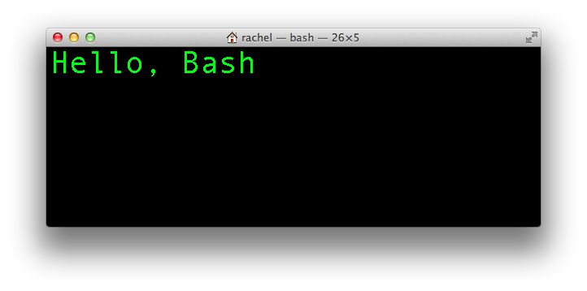

Nerdcred++;
The art of customizing your bash prompt
Created by
Pam Ocampo / @pmocampo
Rachel Walker / @raychatter
Why?
Increase your productivity by maximizing your terminal’s screen real estate.
The Command Line Prompt
PS1 controls the prompt on your terminal’s command line.
The prompt usually looks like this (on Mac):
hostname:~ username$
What's your current prompt?
Open the terminal and type
echo $PS1What does it return?
\h:\W \u\$Let's change our terminal from this
To this:

Or this:

Let's get started!
Hello, Bash
Open the terminal and type:
PS1="Hello, Bash"Hello, Bash
PS1="Hello, Bash"

Persisting changes
-
Open your ~/.bashrc in the terminal
vim ~/.bashrc open ~/.bashrc emacs ~/.bashrc - Add your PS1
export PS1=">> " - Save
- Apply
source ~/.bashrc
Escape Sequences
Remember this?
\h:\W \u\$How does that translate to this?
hostname:~ username$Escape sequences!
Escape Sequence Cheat Sheet
Link to this sheet: http://git.io/vP7GgQ
Escape Sequences Example
Change your Bash prompt to match ours:
(05:40 PM)(username@host:~/home)
Escape Sequences Solution
export PS1=”(\@)(\u@\h):\W “
Colors!
This is boring:
(5:40 PM) (pamo@host):~/home
PS1="(\@)(\u@\h):\W "This is more fun:
(05:40 PM)(pamo@host):~/home
PS1="(\[\033[0;36m\]\@\[\033[0;37m\])(\[\033[0;35m\]\u@\h\[\033[0;37m]\[\033[0;37m\]):\[\033[0;31m\]\W "Break it Down
\[\033[0;COLORCODE\]
- Contain the non-printable characters
- Escape character
- Bold (1) vs Normal (0) characters
Color Codes
- 30m - Black
- 31m - Red
- 32m - Green
- 33m - Yellow
- 34m - Blue
- 35m - Purple
- 36m - Cyan
- 37m - White
- 0 - Normal
- 1 - Bold
Link to this sheet: http://git.io/vP7GgQ
Play with Colors!
\[\033[0;COLORCODE\]
Turn this
(5:40 PM) (pamo@host):~/home
Into this
(05:40 PM)pamo@host:~/home
Colors Solution
export PS1="\[\033[0;36m\](\@)\[\033[0;32m\]\u@\h:\[\033[0;33m\]\w"

Introducing "no color"
- What happens when you type a command?
- The text is all yellow!
- Solution: "no color" command
-
\[\033[0m\]
-
- Try it out!
Variables
PS1=”(\[\033[0;36m\]\@\[\033[0m\])(\[\033[0;35m\]\u\[\033[0m\]@\[\033[0;32m\]\h\[\033[0m\]):\[\033[0;33m\]\W\[\033[0m\]“PS1=”(${CYAN}\@${NO_COLOR})(${PURPLE}\u${NO_COLOR}@${GREEN}\h${NO_COLOR}):${YELLOW}\W${NO_COLOR}“Variables
(05:40 PM)(pamo@host):~/home
YELLOW="\[\033[0;33m\]"
CYAN="\[\033[0;36m\]"
PURPLE="\[\033[0;95m\]"
GREEN="\[\033[0;32m\]"
NO_COLOR="\[\033[0m\]"
PS1="(${CYAN}\@${NO_COLOR})(${PURPLE}\u${NO_COLOR}@${GREEN}\h${NO_COLOR}):${YELLOW}\W${NO_COLOR} "Draw it Out!
Demo time!
Show off your prompt!
Wrapping things up...
Check out our repo for additional resources http://pamo.github.io/nerdcred/
- Detailed explanation of the bash prompt
- Link to these slides
- Sample bash prompts - e.g. git branch status
- ...and if you're feeling lazy, bash prompt builders!
Gracias!
Tweet us your feedback
Pamela Ocampo @pmocampoRachel Walker @raychatter